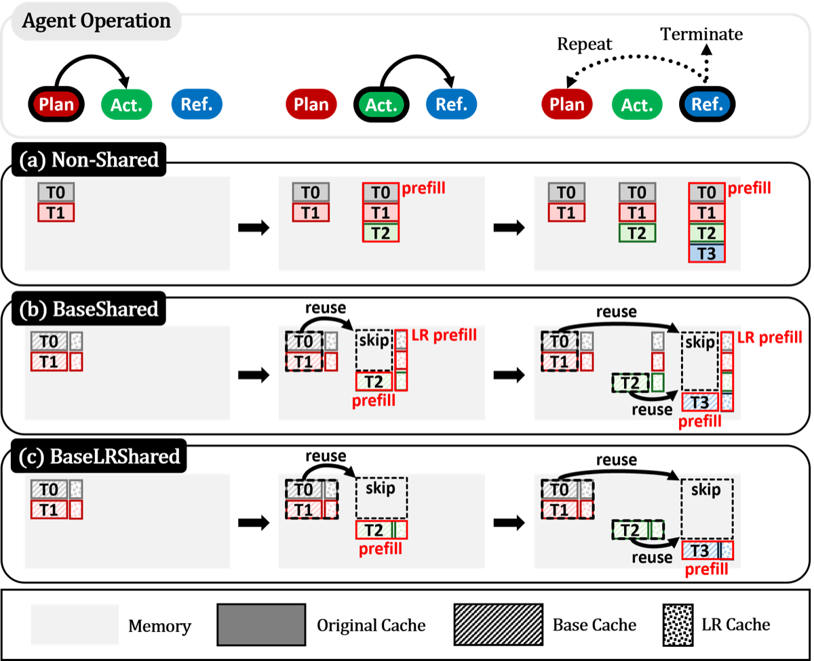

Why it matters왜 중요한가
If agents differ only by a low-rank adapter, their KV caches should differ only by a low-rank amount — so don't pay full price N times.
에이전트가 저랭크 어댑터만큼만 다르다면, KV 캐시도 저랭크만큼만 달라야 한다 — 그러니 N번 풀 비용을 낼 이유가 없다.
Multi-LLM agent systems assign specialized roles (plan / action / reflection) to agents that share one frozen backbone and differ only through lightweight LoRA adapters. Over long, tool-augmented trajectories each agent independently prefills and stores a full KV cache for the same shared context — wasting both memory and compute. Naively sharing one cache for everyone is tempting, but the authors show the adapter-induced differences, though tiny in magnitude, are exactly what preserves each agent's role, so full sharing hurts accuracy. LRAgent threads the needle by decomposing the cache into a shared base part and an agent-specific low-rank part.
multi-LLM 에이전트 시스템은 하나의 고정 백본을 공유하고 가벼운 LoRA 어댑터로만 구분되는 에이전트들에게 plan/action/reflection 같은 전문 역할을 맡긴다. 긴 tool 궤적 동안 각 에이전트는 동일한 공유 컨텍스트에 대해 KV 캐시를 따로 prefill·저장하며 메모리·연산을 낭비한다. 모두에게 캐시 하나를 통째로 공유하면 간단하지만, 저자들은 어댑터로 인한 차이가 크기는 작아도 각 에이전트의 역할을 보존하는 핵심임을 보인다 — 그래서 full sharing은 정확도를 해친다. LRAgent는 캐시를 공유 base 부분과 에이전트별 저랭크 부분으로 분해해 이 딜레마를 푼다.

By the numbers핵심 숫자
across agents (LLaMA-3.1-8B)에이전트 간 base 캐시
코사인 유사도 (LLaMA-3.1-8B)
(carries the role-specific info)어댑터 출력 코사인 유사도
(역할 정보를 담음)
(BaseLRShared vs Non-Shared)처리량 향상
(BaseLRShared vs Non-Shared)
(BaseLRShared vs Non-Shared)TTFT 단축
(BaseLRShared vs Non-Shared)
vs Non-Shared최대 정확도 하락
Non-Shared 대비
vs Non-SharedKV 캐시 메모리
Non-Shared 대비
Results — efficiency near FullShared, accuracy near Non-Shared결과 — 효율은 FullShared급, 정확도는 Non-Shared급
| Method | Max acc. drop | Throughput | TTFT |
|---|---|---|---|
| Non-Shared | — (baseline) | 1.00× | 1.00× |
| FullShared | 5.3% | highest | highest |
| DroidSpeak | 2.6% | 1.36× | 1.56× |
| BaseShared | 0.7% | 1.42× | 1.63× |
| BaseLRShared | 1.5% | 2.46× | 4.44× |
In one diagram한 장의 그림
The idea: a cache that is "shared base + low-rank difference"아이디어: '공유 base + 저랭크 차이'인 캐시
BaseShared
Split the value cache into a base component (X·W₀) shared by all agents and an adapter component (X·ΔW). The first agent materializes the base cache once; others reuse it. The adapter part is stored in its native low-rank form X·A (the "LR cache") instead of full dimension — cutting total KV memory to about 1/N + r/d_out.
value 캐시를 모든 에이전트가 공유하는 base 성분(X·W₀)과 어댑터 성분(X·ΔW)으로 분해한다. 첫 에이전트가 base 캐시를 한 번 만들면 나머지는 재사용한다. 어댑터 부분은 full 차원 대신 본래의 저랭크 형태 X·A("LR 캐시")로 저장 — 총 KV 메모리를 약 1/N + r/d_out로 줄인다.
BaseLRShared + Flash-LoRA-Attention
With a shared down-projection A (shared-A LoRA), the LR cache itself becomes ~identical across agents, so a single LR cache is kept and previously-seen context is skipped — no N redundant prefills. Flash-LoRA-Attention reorders attention to O = P·V_base + (P·V_lr)·B, expanding by the up-projection B only after accumulation, so cost scales with rank r, not d_out.
down-projection A를 공유(shared-A LoRA)하면 LR 캐시 자체가 에이전트 간 거의 동일해져, LR 캐시 하나만 유지하고 이미 본 컨텍스트는 skip — N번의 중복 prefill이 사라진다. Flash-LoRA-Attention은 어텐션을 O = P·V_base + (P·V_lr)·B로 재배열해 up-projection B를 누적 이후에만 적용 — 비용이 d_out이 아닌 rank r에 비례한다.
How it works어떻게 작동하나
- Observe the structure구조 관찰For the same context, the base cache is ~0.97 cosine-similar across agents while adapter outputs are ~0.05 (decorrelated, role-specific). Key caches are >0.98 similar, so they can be fully shared.같은 컨텍스트에서 base 캐시는 에이전트 간 코사인 ~0.97로 유사하고 어댑터 출력은 ~0.05(역할별로 탈상관). key 캐시는 >0.98 유사해 완전 공유 가능하다.
- Decompose and store low-rank분해 후 저랭크 저장Share one base value cache + fully shared key cache; store each agent's adapter contribution only as the intermediate X·A (LR cache), never expanded to full size in memory.하나의 base value 캐시 + 완전 공유 key 캐시를 두고, 각 에이전트의 어댑터 기여는 중간 활성 X·A(LR 캐시)로만 저장 — 메모리에서 full 크기로 펼치지 않는다.
- Share A to skip recomputeA 공유로 재계산 skipAdopt shared-A multi-LoRA so the LR cache is common; a new agent computes activations only for newly appended tokens, dropping complexity from O(N·L²·d) toward O(L²·d).shared-A multi-LoRA를 채택해 LR 캐시를 공통화 — 새 에이전트는 새로 붙은 토큰만 계산, 복잡도가 O(N·L²·d)에서 O(L²·d)로 낮아진다.
- Reconstruct in the kernel커널에서 복원Flash-LoRA-Attention extends FlashAttention with a low-rank accumulator for P·V_lr, applying the up-projection B after accumulation — yielding 1.24–1.35× extra throughput on top of cache sharing.Flash-LoRA-Attention은 FlashAttention에 P·V_lr용 저랭크 누산기를 추가하고 up-projection B를 누적 후 적용 — 캐시 공유 위에 1.24~1.35× 추가 처리량을 얻는다.
What to take away그래서, 가져갈 것
Match the cache to the architecture. Because agents differ only by low-rank adapters, the right unit of sharing is "base + low-rank delta" — giving FullShared-level speed without FullShared's accuracy hit.
캐시를 아키텍처에 맞춰라. 에이전트가 저랭크 어댑터만큼만 다르므로, 올바른 공유 단위는 "base + 저랭크 델타" — FullShared의 정확도 손실 없이 FullShared급 속도를 낸다.
Small differences are load-bearing. Adapter outputs are ~0.05-similar and small in magnitude, yet dropping them (FullShared) costs up to 5.3% accuracy — they encode the role.
작은 차이가 역할을 떠받친다. 어댑터 출력은 유사도 ~0.05에 크기도 작지만, 이를 버리면(FullShared) 정확도가 최대 5.3% 떨어진다 — 역할을 인코딩하기 때문.
The kernel matters as much as the scheme. Flash-LoRA-Attention makes low-rank reconstruction nearly free, turning a clever decomposition into real wall-clock gains (2.46× / 4.44×).
스킴만큼 커널도 중요하다. Flash-LoRA-Attention이 저랭크 복원을 거의 공짜로 만들어, 영리한 분해를 실제 속도 이득(2.46× / 4.44×)으로 바꾼다.